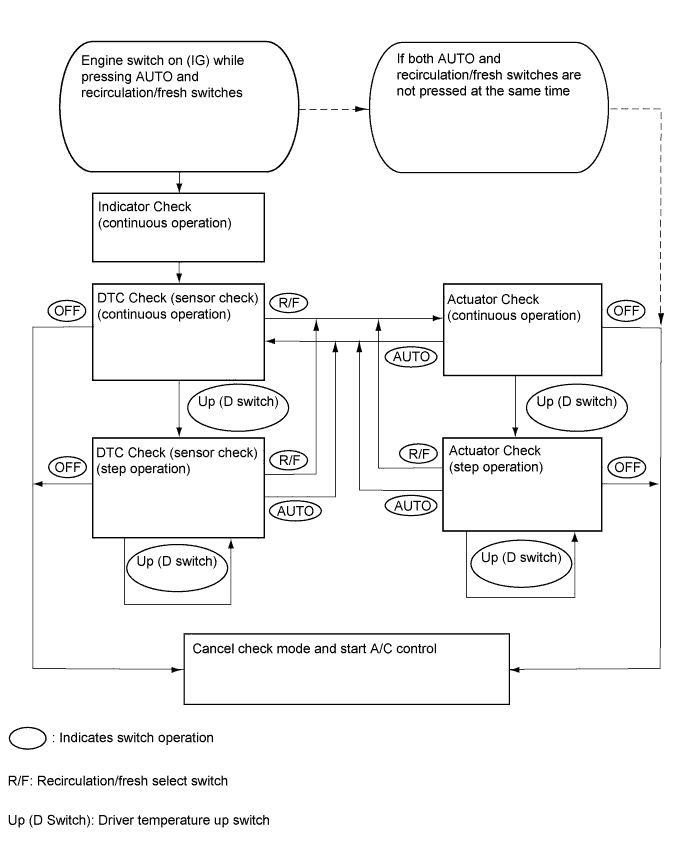
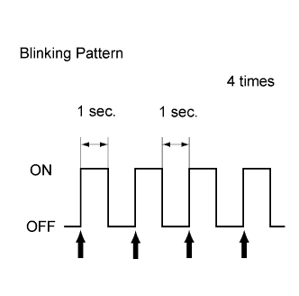

AIR CONDITIONING SYSTEM > CHECK MODE PROCEDURE |
| LIST OF OPERATION METHODS |

| INDICATOR CHECK |
 |
Press and hold the A/C control AUTO switch and recirculation/fresh switch simultaneously, and turn the engine switch on (IG). Continue holding the 2 switches until the panel diagnosis mode begins.
 |
Check that all indicators turn on and off 4 times in succession at 1 second intervals.